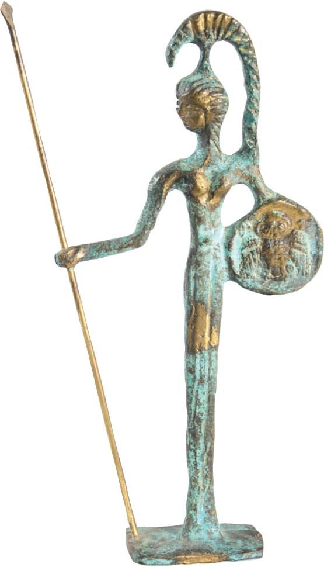
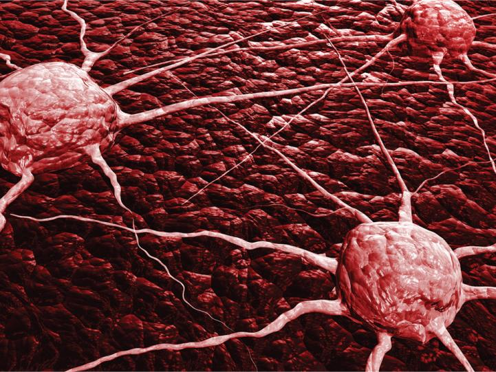
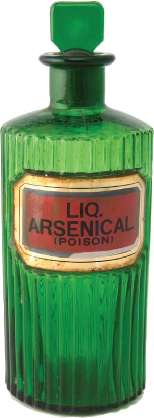
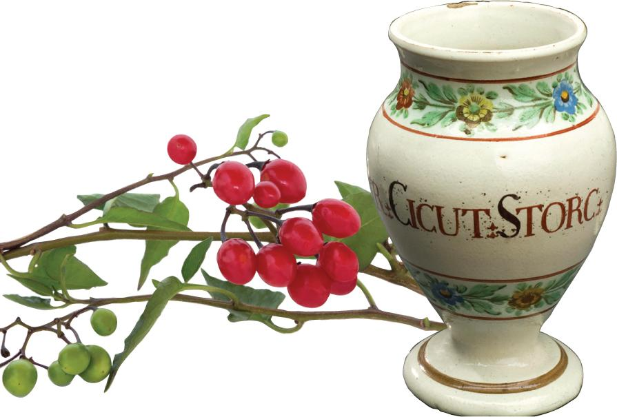
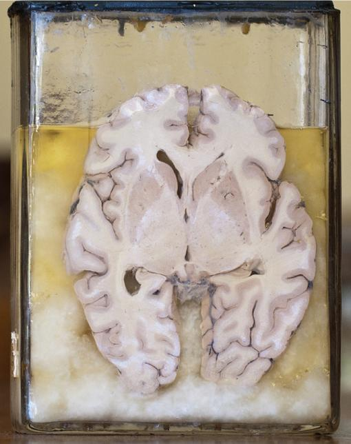
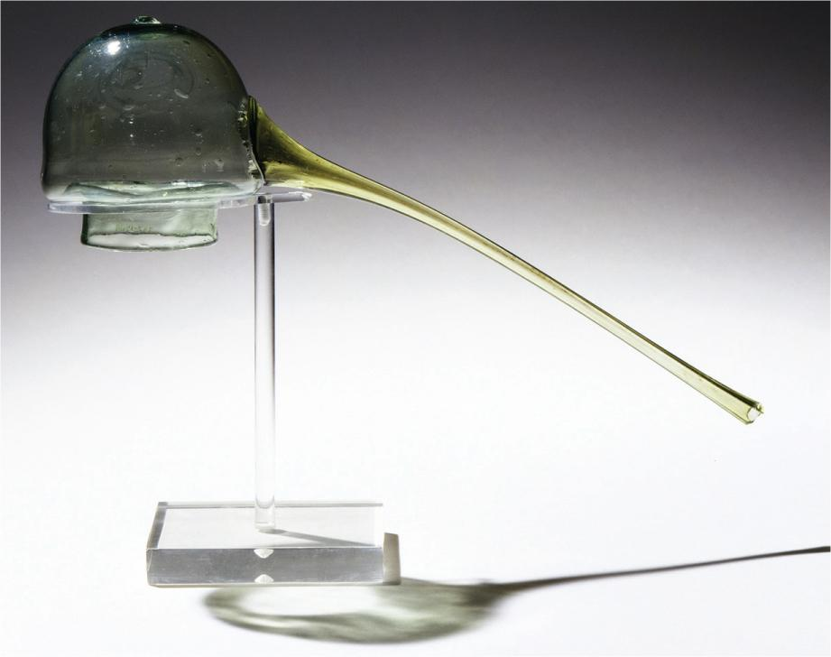

16.1 Historical Introduction
Cancer, the second-leading cause of death in the United States, is not a modern-day affliction. In fact, the disease is as old as the beginnings of humankind. Archaeologists have uncovered melanoma lesions in the skeletal remains of Peruvian Incas (2400
Primitive Cancer Treatments
Recognition of cancerous tumors can be found in ancient Egyptian writings as well. The Edwin Smith Papyrus, a hieroglyphic inscription dating back to around 3000
Early Greek cultures also used a combination of spiritual healing and medicinal remedies to treat cancer. Individuals afflicted with the disease would pray to Athena, the Greek goddess of healing, to banish the tumors from their bodies. Practitioners would compound pastes and ointments from natural substances and apply the salves to tumors. They would also perform rectal cleansing, in the belief that this procedure would rid the body of toxins. Both procedures provided some relief to the patients but had no effect on the disease.

Humoral Imbalance and Cancer
Notable Greek physician Hippocrates studied the disease, seeking an understanding of its origins and growth. In fact, the source of the word cancer is attributed to Hippocrates, who used the Greek word karkinos (meaning “crab”) to describe a fast-growing tumor. Hippocrates thought that the blood vessels projecting from the tumor resembled the legs of a crab. He was also the first practitioner to classify tumors as malignant or benign. According to Hippocrates, the human body is comprised of four humors, or fluids: blood, phlegm, yellow bile, and black bile. Cancer was believed to be caused by an excess of black bile. The result of this condition was a physical state he called melancholy. His humoral theory was built upon the observation that an untreated tumor turned black and eventually erupted through the skin, leaking black fluids.

By the second century, Greek physician Galen made a distinction between the terms tumor and cancer, referring to benign tumors as oncos, the Greek word for “swelling,” and to malignant or cancerous tumors as carcino. The terms oncology and carcinoma—still part of the medical lexicon among cancer specialists— stem from Galen’s coinage. Like his predecessor, Galen also believed that the disease was a result of the imbalance of the body’s humors, and he experimented with a wide range of treatments, including bloodletting and the application of poultices made of opium and licorice. However, Galen realized that his efforts were palliative and that patients suffering from malignant cancers were incurable—a medical belief that would continue for centuries to come.
Caustic Cures for Cancer
In the ensuing years, many different remedies were used to treat cancerous tumors. Practitioners turned to caustic substances to control the spread of the disease. Pastes were compounded from metals such as arsenic and mercury and applied to tumors. Arsenic, a highly poisonous substance, was thought to halt the growth of the tumor; mercury, a metal long associated with mystical properties and a common treatment for skin disorders, was thought to curb the swelling caused by the underlying tumor. Arsenic later became a key ingredient in Plunkett’s powder, a remedy compounded from sulfur, white arsenic, egg yolk, and the plants crowfoot and dog-fennel; this remedy was applied as a poultice to tumors. Today, ironically, both arsenic and mercury are considered possible human carcinogens. However, a form of arsenic—arsenic trioxide—is used to treat a certain type of leukemia.

Poisonous plants, such as hemlock and belladonna (deadly nightshade), were also used to treat cancer. Roman practitioners would crush the herbs and mix the residue with fluid before using the extract in poultices. Centuries later, Austrian physician Anton von Störck conducted studies with hemlock extract (conium), administering the liquid to patients suffering from breast cancer. His results were seemingly favorable, and word quickly spread that the ingestion of Störck’s Extract of Hemlock (its dispensing pot shown) could cure the disease. However, the extract would prove to be an ineffective cancer treatment.

Emerging Cancer Theories
By the beginnings of the Renaissance, medical practitioners began to have a better understanding of human anatomy and physiology. With the discovery of the circulatory and lymphatic systems, scientists and practitioners refuted the existence of black bile and investigated other origins of cancer by conducting laboratory experiments.
In the 1660s, Dutch scientist François de la Boe Sylvius challenged the humoral theory of cancer, establishing his theory that cancer was caused by excessively acidic lymph. Other scientists believed cancer was an infectious disease that was spread through physical contact and that infected individuals should be sent away from their homes and communities to live in isolation. Still others thought that the disease was caused by external toxins, viruses, bacteria, or even trauma. In fact, in 1779, the first cancer hospital in France was forced to move out of the city of Reims due to a fear that cancer was caused by a contagious parasite.
Investigations into the different causes of cancer began with the conduction of the first human autopsy by Italian practitioner Giovanni Morgagni in 1791. The dissection of the human body—up to this point, a procedure prohibited by religious doctrines—led to vast improvements in the understanding of human anatomy and physiology and the pathophysiology of the disease process. Consequently, several new theories about the cause of cancer emerged, paving the way for the study of oncology.

New methods of treating cancer were also explored. Instead of applying medicinal poultices or ingesting liquid remedies, surgery became a viable treatment option. One of the proponents for surgery was eminent Scottish physician John Hunter (1728–1793), who suggested that a patient with no evidence of metastasis could have the tumor removed to prevent the progression of the disease. Hunter surmised that cancer moved through the body’s blood supply via the lymphatic system. His lymph theory built upon the idea that the human body’s fluid system was the key to understanding the spread of cancer.
In 1838, German pathologist Johannes Müller advanced his theory, called the blastema theory, which was based on his belief that cancer cells arose from connective tissue (blastema). His student, German pathologist Rudolph Virchow, theorized that chronic irritation of tissues caused cancer and that cancer spread throughout the body like liquid saturating a sponge. Even though these early theories regarding the cause and spread of cancer were eventually disproven, they were valuable stepping stones that led to a greater understanding of the human body and the mechanism by which cancer forms and spreads.
Advances in Cancer Diagnosis and Treatment
By 1865, German surgeon Karl Thiersch demonstrated that cancer originated in epithelial cells and metastasized by the spread of malignant cells. Microscopic cell studies continued into the late 19th century when German bacteriologist Paul Ehrlich used methylene blue stain to demonstrate cell pathology. His research in immunology and tissue- and cell-staining techniques paved the way for genetic studies in cancer research and drugs that interfere with the cellular process. In fact, Ehrlich is credited with coining the word chemotherapy, a term derived from the words chemical and therapy. Ehrlich won a Nobel Prize in 1908 for pioneering the use of chemical compounds to treat diseases. He famously said, “We must search for magic bullets. We must strike the parasites and the parasites only… and to do this we must learn to aim with chemical substances.” For his pioneering work, Ehrlich is considered the “Father of Chemotherapy.”

By the close of the 19th century, advances in surgical techniques, infection control, and anesthesia made excision of tumors a viable option for cancer patients. The invention of X-rays in 1896 made diagnosis of the disease easier, and the discovery of radium in 1898 made radiation therapy, or the use of radiation to harness or kill cancer cells, a treatment option. Both technological advances improved patient prognosis.
DNA Studies and Cancer
In the 1940s, cancer research took a major leap forward with the discovery of deoxyribonucleic acid (DNA), the genetic code that provides the blueprint for the structure of cells. British biophysicist Rosalind Franklin was a leading pioneer in DNA research, capturing X-ray images of DNA structure that proved essential in understanding this genetic code.
In 1953, American biologist James Watson and British biologist Francis Crick published a scientific paper that identified the structure of DNA as a double helix—resembling a continuously twisting ladder—containing all of the sugars and base molecules that determine physical characteristics. Cracking this genetic code allowed scientists to understand the functions of genes and the role of defective genes in the development of cancer. They concluded that cancer cells with defective DNA did not die like normal cells did; rather, the cancer cells continued to grow and divide uncontrollably. The pathophysiology of cancer was finally understood by the medical community. To acknowledge this breakthrough discovery, Watson and Crick, along with British molecular biophysicist Maurice Wilkins, were awarded the Nobel Prize in Physiology or Medicine in 1962.
Many researchers and historians believe that Franklin should have been included as a Nobel Prize recipient, as the noted accomplishment was based upon much of her early research. However, at that time in history, women’s contributions to science were often overlooked. Although it is clear that Franklin played a crucial role in the discovery of DNA, the debate over how much credit she should receive for those contributions continues to this day. What is clear is that the work of Thiersch, as well as each of these early DNA researchers, paved the way for the modern understanding of the origin, metastasis, and treatment of cancer.
The Beginnings of Chemotherapy
The first effective cancer chemotherapy treatment was not developed until 1946. American pharmacologists Dr. Alfred Gilman and Dr. Louis Goodman were commissioned by the US Department of Defense to study agents that might be used in chemical warfare and discovered that nitrogen mustard (when injected intravenously into cancerous mice) caused a reduction in the size and number of cancer tumors. Nitrogen mustard is an alkylating agent. As a cytotoxic drug, it binds to nucleic acids and inhibits cell division by damaging the cell’s DNA. Nitrogen mustard was subsequently administered intravenously to several patients with advanced lymphoma and had limited results. However, its use ushered in a class of chemotherapeutic agents still utilized today.
By the second half of the 20th century, several chemotherapy drugs had been developed, including oral, injectable, and intravenous forms. These drugs decrease tumor size, control tumor growth, or destroy cancerous cells by targeting specific parts of the cell or cell cycle.
Cancer Therapy Today
Cancer is a term used today to describe a class of diseases characterized by the presence of abnormal cells that divide and multiply uncontrollably and invade nearby tissue. Cancer cells can spread to other parts of the body through the lymphatic system and, therefore, the blood. Cancer that has spread from one part of the body to another is said to have metastasized. Certain chemicals, viruses, and exposure to radiation can cause cancer. In addition, some forms of cancer are caused by genetic mutations. Cancer may develop in almost any organ or body system; some of the most common cancers originate in the breast, lung, colon, skin, prostate, and ovary. Other common forms of cancer are leukemia, which originates in the blood, and lymphoma, which originates in the lymph system.
Today, dramatic improvements in cancer treatment have led to greatly improved survival rates. In general, if cancer is detected and treated before it metastasizes to another part of the body, the patient has a much greater chance of being cured, or at least experiencing long-term remission. Modern cancer therapy may involve surgery, radiation, hormone therapy, chemotherapy, immunotherapy, or a combination of these treatments. Because detection is key to the prevention, diagnosis, and treatment of cancer, the National Cancer Institute and the National Human Genome Research Institute began The Cancer Genome Atlas Pilot Project in 2006. The project’s goal is twofold: 1) to map the genomic (genetic) changes in brain, lung, and ovarian cancers to determine the feasibility of exploring the genomic changes in every type of cancer, and 2) to develop new methods for the prevention, diagnosis, and treatment of the disease.
Sterile Compounding of Chemotherapy Preparations
Compounding chemotherapy preparations is more complex than compounding nonhazardous sterile products. Sterile compounding personnel must follow USP <797> standards as well as the standards found in USP <800>. Sterile compounding personnel must follow strict procedures to protect the compounded sterile preparation (CSP) from contamination as well as to protect themselves from exposure to the chemotherapy. For that reason, the preparation of chemotherapy requires personnel to have additional training and competency assessments that include the safe handling of hazardous drugs, calculations using body surface area, use of specialized equipment and devices, and specific knowledge about the drugs used in chemotherapy CSPs. Chapter 16 provides the information needed to safely compound chemotherapy and other hazardous drug preparations.